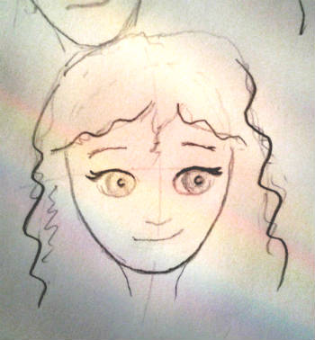

And we’re live with the new website here at esivy.com, blog at http://OFFLINEZIP.wpsho/blog/! I’ve tested and retested, but let me know if you run into anything that’s not working.
I’ve got lots in store, starting with a new cover for Miri Attwater and the Ocean’s Secret. I still love the old cover, but some limitations became apparent as we struggled to come up with a cover for book 2, Miri Attwater and All that Glitters.
We analyzed and looked at covers of other fantasy books for kids. What we finally decided was this. The design for The Ocean’s Secret cover really started when books 1, 2, and 3 were all one book, a much longer book. While older readers will still enjoy series, we want to appeal to younger readers as well.
This was a bit tricky to decide, as the Ocean’s Secret, at around 30,000 words, is a much longer book than most similar books for young readers. For example, the popular series of fantasy books for girls, Goddess Girls by Joan Holub, starts out with books under 19,000 words.But the longer length of The Ocean’s Secret might also turn out to be a plus. Lots of readers have commented that The Ocean’s Secret seems short. While I hope that means that readers get so caught up in the story that they don’t want it to end, 🙂 part of the problem might be that it’s hard to judge length in an ebook. But some of that might be that the cover sets the reader up to expect a much longer book. Perhaps a different cover will help.
We wanted to go with a cover that put a friendlier face on the book, and we wanted the covers to match. So that meant redoing the cover for book 1.
I looked into hiring a new artist for the covers, but in the end the best option turned out to be TechnoTim learning a new type of computer art. He’s having a lot of fun with it, and I’m amazed at how the new covers are turning out.
But it also means that the cover for book 2 is taking longer, so I thought I’d show you a bit of the progress in the meantime. Here’s the beginning of TechnoTim’s process for drawing Miri. He started by doing a bunch of sketches in pencil in paper. I critiqued them and he tweaked them until we came up with this.

Let me know what you think!
[…] cover design is fun! Challenging, but fun. In past posts we’ve showed you the original pencil sketch of Miri and the first colored version of her […]